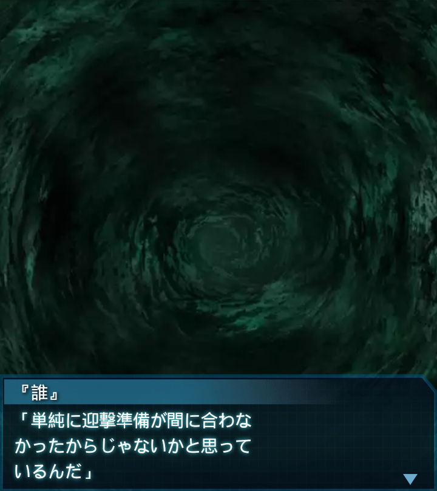
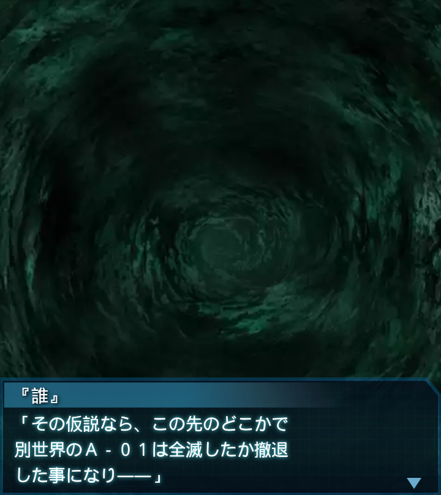

『誰』
「先程の話の続きだが…。新型ＢＥＴＡに俺達が撃ち落とされずに
済んだ理由は――」

『誰』
「単純に迎撃準備が間に合わなかったからじゃないかと思って
いるんだ」
リリア
「深さ２倍のハイヴは、ＢＥＴＡにとっても問題がある…奴らが望んで
こうなった訳じゃないから…」
篁唯依
「地球にフェイズ６以上のハイヴがないのには理由がある筈なのに、
その規模を無視したら――」
『誰』
「どこかに弊害が出るに決まっている。例えばそう…俺達に気付いて
表に向かった時はもう遅かった」
『誰』
「…というのは一見マヌケな話だがあり得ると思う。奴らは知的生命体
ではないんだから」
リリア
「それでも奴を生み出した理由は…あの並外れた戦闘能力が必要
だと判断したから…」

リリア
「そして結果として、その事が仇となり、我々の進軍を許していると
いう事ですね？」
篁唯依
「私も中尉の見解に賛同します。とにかく奴の戦闘能力は並外れて
いましたから…」
『誰』
「せめて光線級でとどめておけばよかったものを、欲張った結果、
量を稼ぐ事ができなくなった…」
『誰』
「篁中尉の言う通り、奴は大きな脅威だったから、ＢＥＴＡの選択は
理解できる。だが間違った」
『誰』
「世界の融合は俺達に牙を剥いてばかりじゃない…と信じたいな」
リリア
「そうですね。けどこの横坑、次第に戦闘の形跡が無くなってない？
もしかしてこっちのハイヴは…」
『誰』
「別世界の方かもしれないな。もう少し先に進んでみれば、
確証が得られるかもしれない」

『誰』
「その仮説なら、この先のどこかで別世界のＡ－０１は全滅したか撤退
した事になり――」

『誰』
「その証拠に辿り着く事ができるからだ。全機その辺りを意識して
進んでくれ」